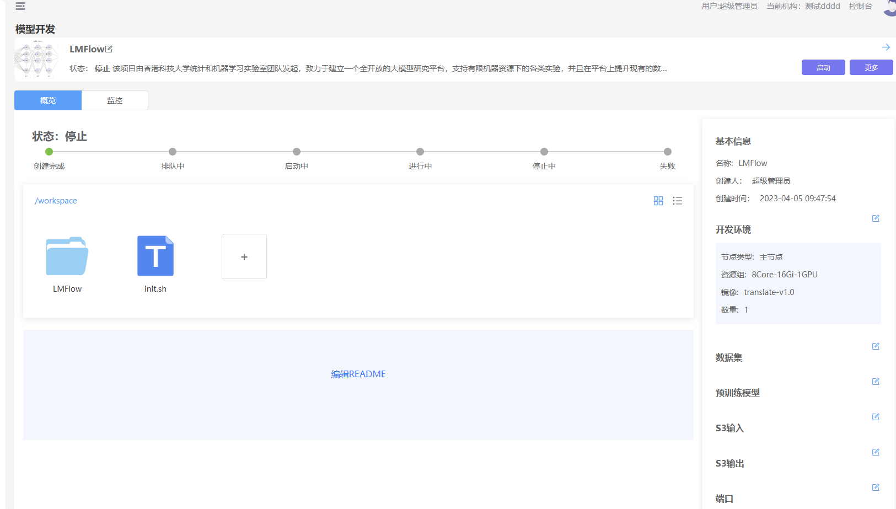

简介
JupyterLab是Jupyter Notebook的全面升级。JupyterLab 是一个集 Jupyter Notebook、文本编辑器、终端以及各种个性化组件于一体的全能IDE,相比Jupyter Notebook，JupyterLab能够打开更多的文件格式，除了代码文件（.py、.cpp），还包括CSV、JSON、Markdown、PDF。
操作步骤
1、进入“模型开发”页面
2、点击“新增”按钮
3、填写表单信息、类型选择“Jupyter”
| 参数 | 描述 |
| 名称 | 模型开发任务的名称，长度在5-40之间，必填 |
| 描述 | 对任务的描述，必填 |
| 配图 | 任务的配图，非必填 |
| 环境（主节点） | 环境是平台预制的开发环境，分为公开（平台发布的）、共享（每个租户内部共享）、私有（每个用户独享） |
| 资源组 | 平台将内存、CPU、GPU打包一组资源组让用户使用，资源组由管理员在控制台维护 |
4、点击“确定”，进入“详情页”

5、点击“启动”按钮，等待一会，详情页的进度条会显示启动的进度
6 等待状态变成“运行中”，点击“进入”按钮，即可进入JupyterLab